Structured answers结构化结果
Every tool returns {ok, data, error, artifacts}. Errors carry a code and a suggestion the model can act on.每个工具都返回 {ok, data, error, artifacts}。出错时带错误码和处理建议，模型能照着做下一步。
alb connects Claude Code, Codex, Cursor — or your own model — to real hardware over adb, UART, fastboot and Qualcomm EDL, even when the board sits on a bench PC in another room. Android today; embedded Linux, kernels and servers next. alb 让 Claude Code、Codex、Cursor 或你自己的模型，经 adb、串口、fastboot、高通 9008 直接调真实硬件 —— 板子插在另一个房间的台架电脑上也行。现在支持安卓，下一步是嵌入式 Linux、内核和服务器。
›The new kernel hangs on the bench board. Flash it and tell me why.新内核在台架那块板子上卡住了，烧进去查一下原因。
make bootimage -j"$(nproc)"✓ built编译完成alb flash write boot boot.img -y✓ via bench agent经台架 agentalb timeline capture -d 90✓ uart · logcat · dmesgalb log search "Kernel panic|Unable to handle"2 hits处命中Found it. The board panics 4.2 s after power-on, inside the display driver's probe: a NULL pointer read. I've added the missing check and I'm rebuilding. 找到了。板子上电 4.2 秒后在显示驱动的 probe 里崩溃：读了空指针。我已经补上判空，正在重新编译。
An agent typing raw adb gets free text, an English error line and a context window full of logcat. alb turns the same work into tool calls with structured answers.让 Agent 直接敲 adb，拿回来的是自由文本、一行英文报错和塞满上下文的 logcat。alb 把同样的事变成工具调用，返回结构化结果。
Every tool returns {ok, data, error, artifacts}. Errors carry a code and a suggestion the model can act on.每个工具都返回 {ok, data, error, artifacts}。出错时带错误码和处理建议，模型能照着做下一步。
Captures land in a workspace on disk. The model searches them and reads the lines it needs instead of swallowing the whole stream.抓到的日志落在工作区。模型先搜索，再读需要的那几行，不用把整份日志吞进去。
alb shell works over adb, ssh or the serial console. alb picks the link per command, so the model doesn't juggle three toolsets.alb shell 走 adb、ssh 或串口都能用，alb 按命令自动选连接，模型不用记三套工具。
Board commands run as typed. The PC the board is plugged into only runs operations listed in its agent's operation table.板子上的命令照原样执行；插着板子的那台电脑，只执行台架 agent 操作表里登记过的操作。
The AI coding agent and the alb hub run on the build server, next to the source tree and the CPUs. A small bench agent on each PC with boards dials out to the hub, so nobody opens a port on the bench. Follow one debugging loop below, or switch to what ships today.AI 编程助手和 alb hub 跑在编译机上，挨着源码树和 CPU。每台插着板子的电脑上跑一个小小的台架 agent，由它主动连回 hub，台架这边不用开任何端口。下面可以一步步走一遍调试流程，也可以切到「现在已实现」只看已经做好的部分。
Pick a step to light up the parts it uses. Six steps take a bug from “it hangs” to a patched build, without anyone walking to the bench.点一个步骤，图里会亮出这一步用到的部分。六步把一个问题从「卡住了」走到「补丁编好」，全程没人需要走到台架前。
From a terminal on the build server, or from the Web UI in any browser: “the new kernel hangs on the bench board — find out why.”在编译机的终端里，或在任何浏览器的网页界面里说：「新内核在台架板子上卡住了，查一下原因」。
Claude Code, Codex or Cursor works in the source tree on the build server, thinking with a cloud model and building with the server's CPUs. No tree is copied to a laptop.Claude Code、Codex 或 Cursor 直接在编译机的源码树里工作：用云端模型思考，用编译机的 CPU 编译，源码不用拷到个人电脑上。
alb flash hands the image to the hub; the hub sends it down the bench agent's own outbound connection; the agent runs fastboot or Qualcomm EDL next to the board. A dedicated flash station is planned.alb flash 把镜像交给 hub,hub 顺着台架 agent 自己连过来的那条连接发下去，agent 在板子旁边跑 fastboot 或高通 9008。专门的烧录机还在规划中。
The bench agent forwards serial bytes and adb as they are. alb timeline lines up logcat, dmesg and UART on one clock, stored in the workspace.台架 agent 把串口字节和 adb 原样转回来。alb timeline 把 logcat、dmesg、串口按同一个时钟排好，存进工作区。
Today the main agent searches the workspace itself with alb_log_search. Planned: a small local model at the bench reads the whole stream and hands back a few lines of findings, so the big model never pays for raw logs.现在由主力助手用 alb_log_search 自己搜工作区。规划中：台架旁边的本地小模型读完整份日志，只交回几行结论，大模型不用为原始日志付 token。
The main model reads the findings, changes the code and starts again at step 2. The loop repeats until the board boots.主力模型读完结论，改代码，回到第 2 步。一直循环到板子起来为止。
A booting board prints far more than a frontier model should read. alb is built so each role can use a different model: the main agent plans and patches, a small local model sits next to the stream, and the two pass findings rather than raw logs.板子启动时打印的东西，远比大模型值得读的多。alb 让每个角色可以用不同的模型：主力助手负责规划和改代码，本地小模型守在日志流旁边，两边之间传的是结论，不是原始日志。
UART from the first bootloader line, logcat, dmesg and the bench PC's USB logs, merged on one clock.从 bootloader 第一行开始的串口、logcat、dmesg，加上台架电脑的 USB 日志，按同一个时钟合在一起。
A small local model next to the bench reads the whole stream, flags panics, boot stalls and watchdog resets. Cheap, private, always on.台架旁边的本地小模型读完整份日志，标出 panic、启动卡住、看门狗复位。便宜、数据不出内网、可以一直开着。
A few lines with timestamps and a pointer back to the raw log in the workspace, so the main model can check any claim.几行带时间戳的结论，附上指回工作区原始日志的位置，主力模型可以逐条核对。
Your coding agent reads the findings — or the raw log, through alb_log_search, whenever it wants — and decides the next change.你的编程助手读结论 —— 想看原始日志时也可以随时用 alb_log_search 直接查 —— 然后决定下一步怎么改。
alb is an MCP server, so any agent that speaks MCP can drive a board. The same business layer sits behind MCP, the CLI and the HTTP API — a fix lands in all three at once.alb 是一个 MCP server，任何支持 MCP 的 Agent 都能用它调板子。MCP、命令行、HTTP 接口背后是同一套业务代码，修一处三边同时生效。
Your agent can also just run alb in a shell: every command takes --json, and alb describe prints the whole schema for a model to read.Agent 也可以直接在 shell 里跑 alb：每个命令都支持 --json,alb describe 会把完整的工具说明打印出来给模型读。
alb_devicesalb_shellalb_logcatalb_dmesgalb_uart_capturealb_uart_watch_panicalb_log_searchalb_tombstone_pullalb_anr_pullalb_ui_screenshotalb_metrics_snapshotalb_wait_boot
# in your android-llm-bridge checkout $ claude mcp add alb -- uv run --project "$PWD" alb-mcp $ claude › list the boards and pull the last tombstone from the first one
Registers alb as a stdio MCP server for Claude Code.把 alb 登记成 Claude Code 的 stdio MCP server。
# in your android-llm-bridge checkout $ codex mcp add alb -- uv run --project "$PWD" alb-mcp $ codex › capture 60 s of UART and tell me where the boot stops
Writes the server into ~/.codex/config.toml.会写进 ~/.codex/config.toml。
// .cursor/mcp.json { "mcpServers": { "alb": { "command": "uv", "args": ["run", "--project", "/path/to/android-llm-bridge", "alb-mcp"] } } }
Any other MCP client uses the same command: uv run --project … alb-mcp over stdio.其他 MCP 客户端用同一条命令：uv run --project … alb-mcp，走 stdio。
$ uv run alb --json shell "getprop ro.build.version.release" {"ok": true, "data": {"stdout": "14\n", "stderr": "", "exit_code": 0, "duration_ms": 87}, "error": null, ...} $ uv run alb serial break-in # stop in U-Boot $ uv run alb timeline show DIR --src uart,dmesg
Output shortened. alb describe prints every command and error code.输出有删节。alb describe 会列出所有命令和错误码。
$ uv run alb-api # FastAPI on :8765, Web UI at /app $ curl -s localhost:8765/health $ curl -s -X POST "localhost:8765/api/timeline/capture?device=SERIAL"
REST plus WebSocket streams for logcat, UART and chat. See web-api.md.REST 接口，外加 logcat、串口、对话的 WebSocket 流。见 web-api.md。
adb is the everyday path. When the board won't boot, the serial console, fastboot and EDL are what's left, and alb drives all of them through the same bench agent.日常用 adb。板子起不来的时候，剩下能用的是串口、fastboot 和 9008,alb 经同一个台架 agent 都能操作。
| Link连接 | Best for适合 | Boot log启动日志 | Bootloaderbootloader | No network needed不需要网络 | Through a bench PC经台架电脑 |
|---|---|---|---|---|---|
| adb · USB | everyday Android work日常安卓调试 | — | — | ✓ | ✓ |
| adb · Wi-Fi | cable-free sessions不插线调试 | — | — | — | direct直连 |
| ssh | Linux boards running sshd: rsync, tmux跑 sshd 的 Linux 板子：rsync、tmux | — | — | — | direct直连 |
| UART | bring-up, U-Boot, kernel panicsbring-up、U-Boot、内核崩溃 | ✓ | ✓ | ✓ | ✓ |
| fastboot | flash partitions, getvar, oem烧分区、getvar、oem | — | ✓ | ✓ | ✓ |
| Qualcomm EDL (9008)高通 9008(EDL) | full flash when nothing else boots什么都起不来时整包烧录 | — | below it比它更底层 | ✓ | ✓ |
The transports underneath — serial, ssh, USB — are not Android-specific. The plan is to give embedded boards, kernels and servers the same kind of tools Android has today.底下的串口、ssh、USB 本来就不只属于安卓。计划是让嵌入式板子、内核和服务器也有安卓现在这样的一整套工具。
alb port经 alb port 连 gdbserver 或板上任意端口Today现在
Ideas — help wanted想法 · 欢迎参与
Today现在
Planned规划
Today现在
Planned规划
The hub serves a Material 3 web app: board overview, console, logs, merged timeline, flashing, the bench and an assistant that can call the same tools. English and Chinese, light and dark.hub 自带一个按 Material 3 做的网页：板子总览、控制台、日志、合并时间轴、烧录、台架，还有一个能调用同一套工具的助手。中英文、深浅色都有。
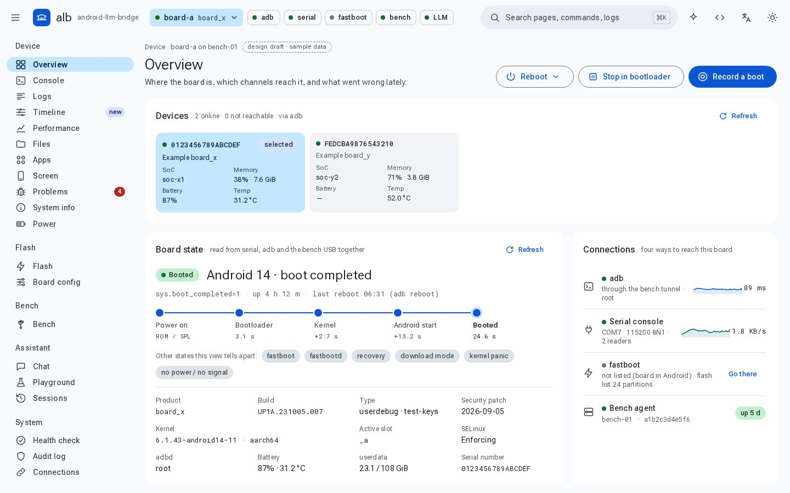
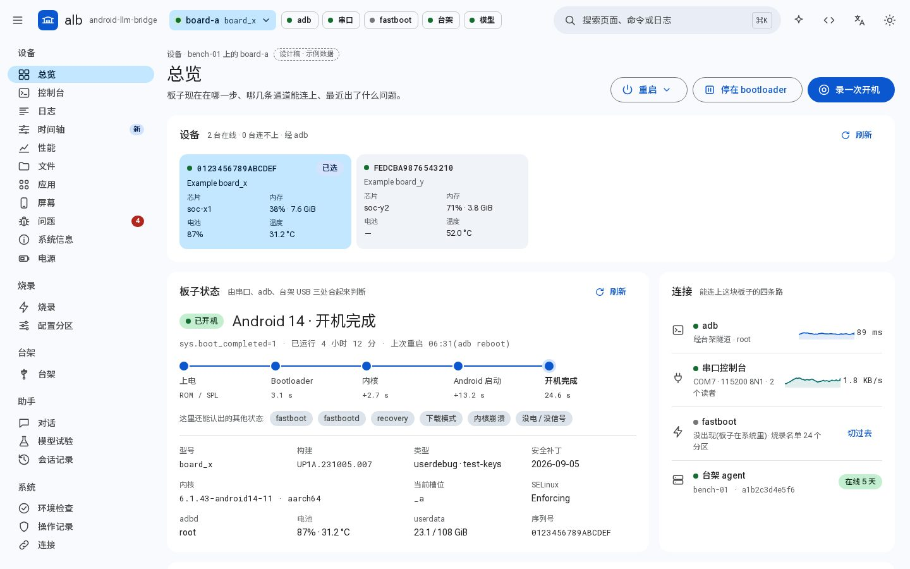
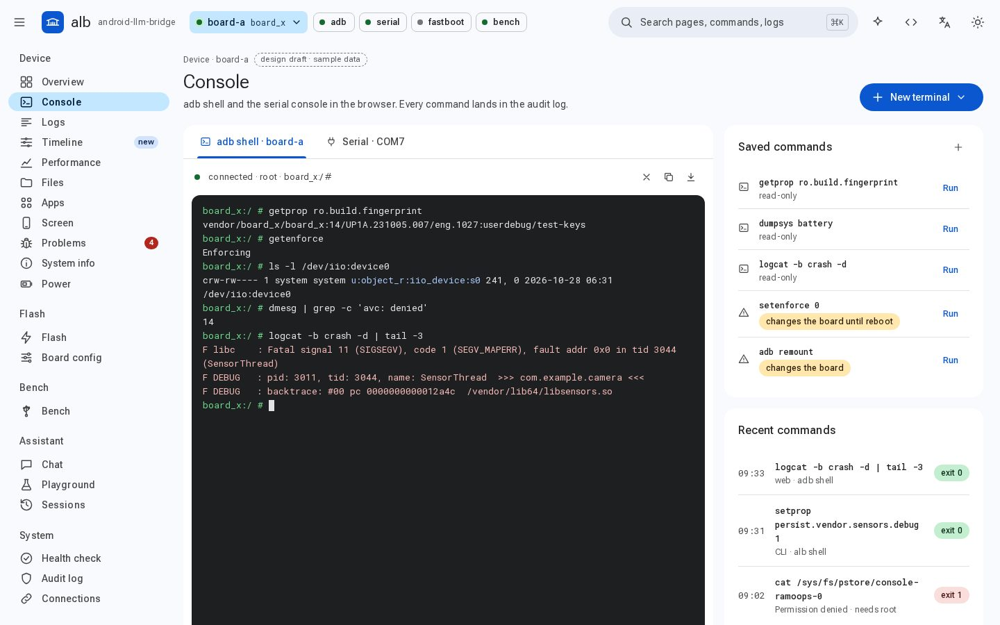
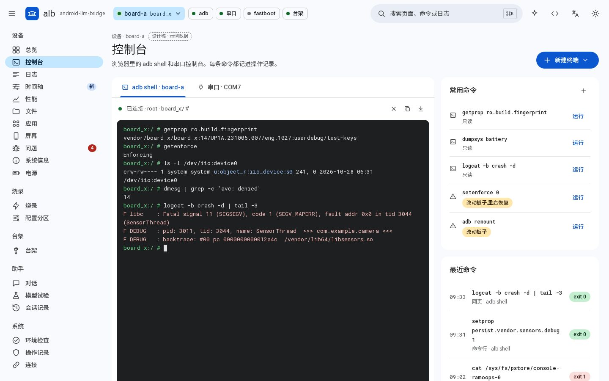
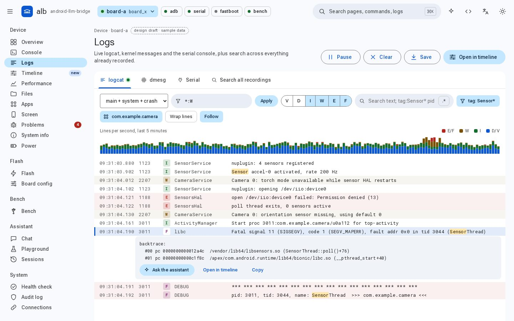
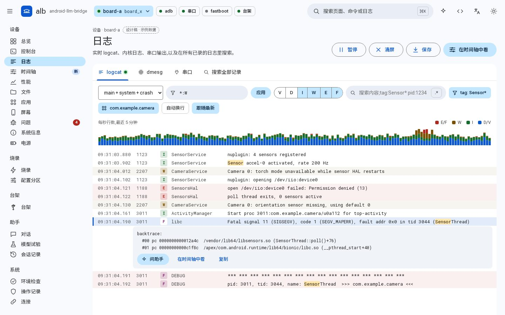
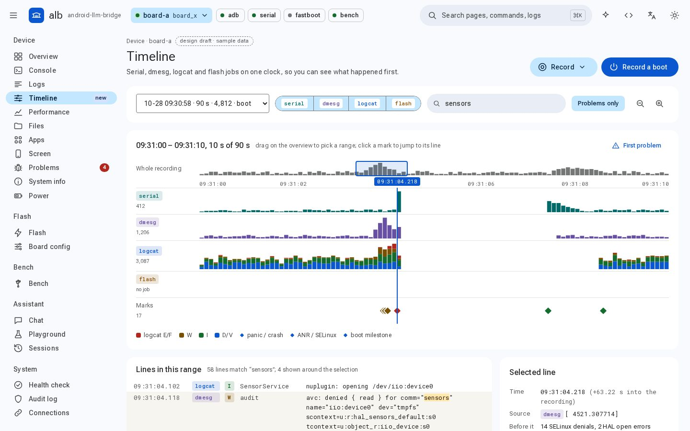
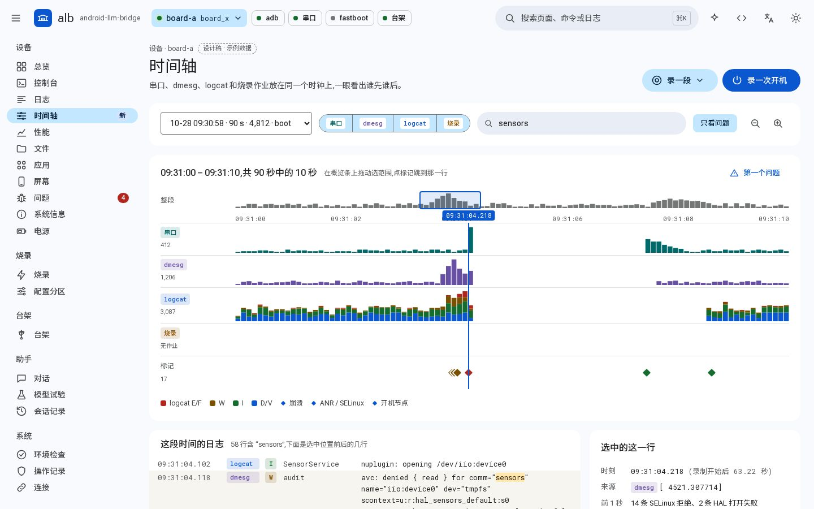
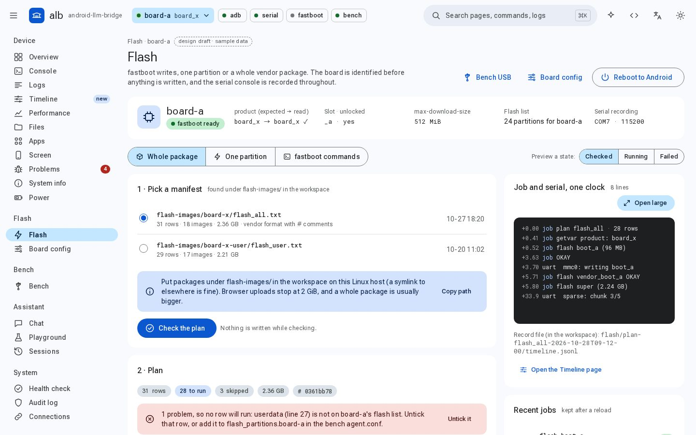
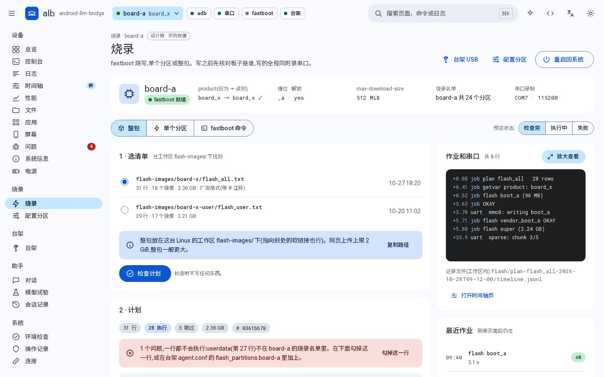
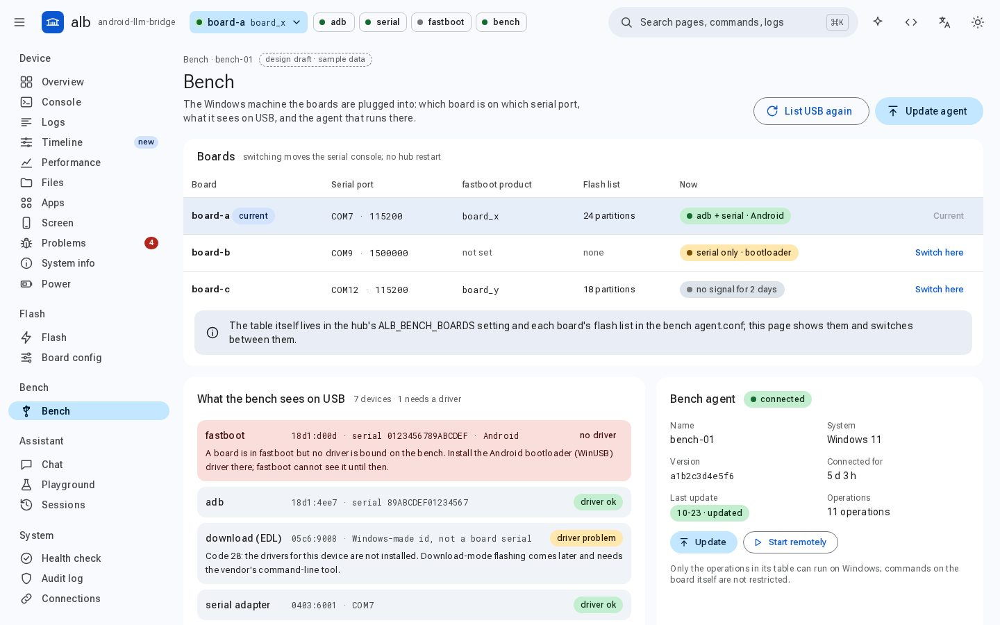
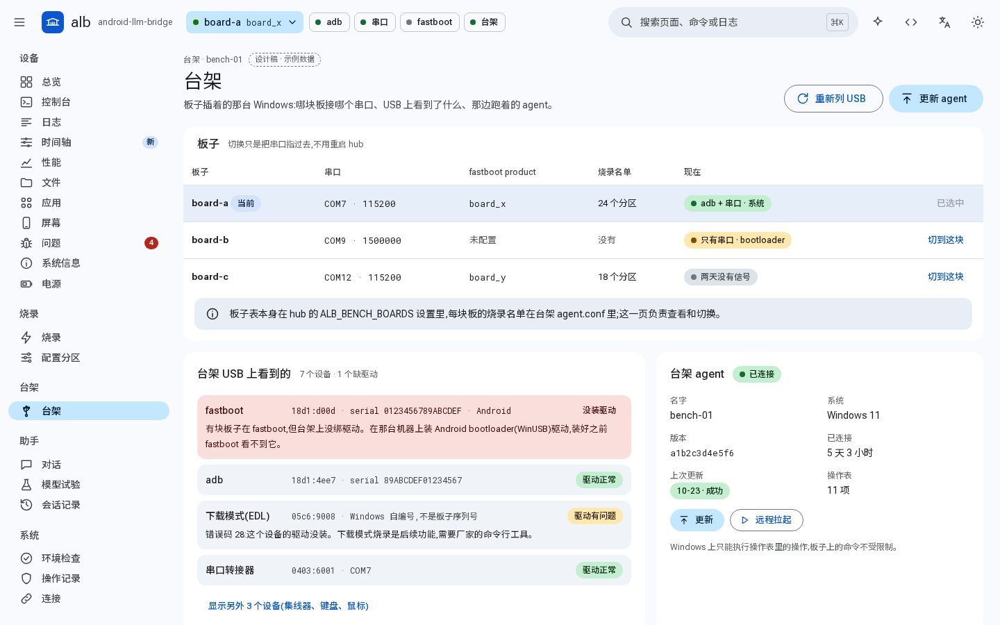
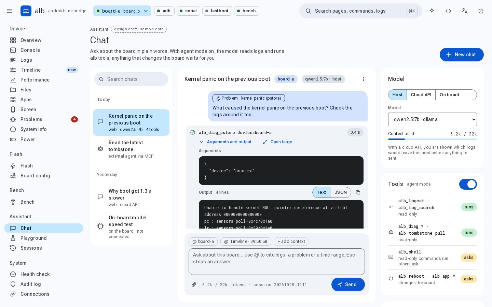
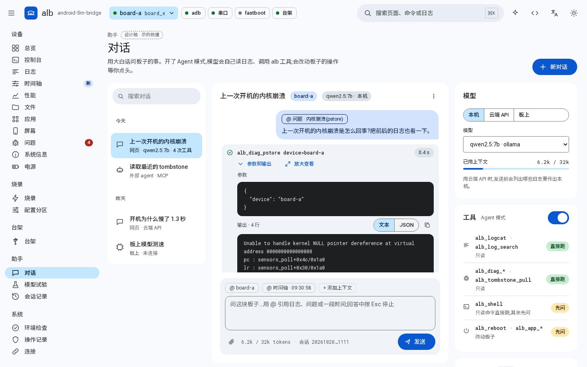
Open the full Web UI gallery and the interactive mock-ups →打开完整的网页界面图集和可交互设计稿 →
No root, no system Python changes. The installer works inside your home directory and can fetch adb and fastboot for you.不要 root，不动系统 Python。安装脚本只在你的家目录里干活，还能顺手把 adb、fastboot 下好。
Clones the repo and builds an isolated Python environment inside your home directory.克隆仓库，在家目录里建一个独立的 Python 环境。
git clone https://github.com/TbusOS/android-llm-bridge cd android-llm-bridge ./scripts/install.sh
doctor checks every outside tool alb needs; devices lists what it can reach.doctor 检查 alb 用到的外部工具，devices 列出能连上的板子。
uv run alb doctor uv run alb devices uv run alb shell "uname -a"
Register the MCP server once and your agent sees all 36 tools.登记一次 MCP server,Agent 就能看到全部 36 个工具。
claude mcp add alb -- uv run --project "$PWD" alb-mcp
# or: codex mcp add alb -- uv run --project "$PWD" alb-mcp
Run the hub on your Linux server and the bench agent on the Windows PC next to the board. The agent dials out, so the bench needs no inbound port and no tunnel.在 Linux 服务器上起 hub，在插着板子的 Windows 电脑上起台架 agent。agent 主动连出去，台架不用开入站端口，也不用打隧道。
# Linux (hub) cd deploy/hub && cp hub.env.example hub.env ./run-hub.sh # Windows (bench PC), copy clients/windows-agent/ over run-agent.bat
Shipped items are in the code today. Next and later are plans, not promises — want one sooner? Open an issue or send a pull request.「已实现」的都在代码里。「接下来」和「更远」是计划不是承诺 —— 想让哪一项早点来，欢迎提 issue 或直接发 PR。
alb is Apache 2.0 and brand-neutral. Each extension point is one well-defined place in the code.alb 使用 Apache 2.0 协议，不带任何厂商品牌。每种扩展都对应代码里一个明确的位置。
A debug probe, a vendor console, a network serial server. Implement the transport interface.调试探针、厂商控制台、网络串口服务器 —— 实现传输层接口即可。
src/alb/transport/base.py
One module, then expose it as an MCP tool and a CLI command from the same function.写一个模块，再从同一个函数导出成 MCP 工具和命令行命令。
src/alb/capabilities/
Anything that must run on the bench PC is one row in the agent's operation table, and the hub can push the new agent remotely.必须在台架电脑上跑的操作，在 agent 操作表里加一行；新版 agent 可以由 hub 远程推上去。
clients/windows-agent/
Your SoC's flash tool, wired up the way Qualcomm EDL is: find the port, send the loader, write by manifest.你家芯片的烧录工具，照高通 9008 的做法接进来：找端口、送 loader、按清单写。
src/alb/remote/
Add your console, flash tool or board quirks to alb once, and every MCP-capable agent — Claude Code, Codex, Cursor, in-house ones — can flash, watch and debug your hardware. Issues, design discussions and pull requests are all welcome.把你的串口控制台、烧录工具或板子的特殊之处接进 alb 一次，所有支持 MCP 的 Agent —— Claude Code、Codex、Cursor、企业自研的 —— 都能烧录、观察、调试你的硬件。欢迎提 issue、讨论设计、发 PR。